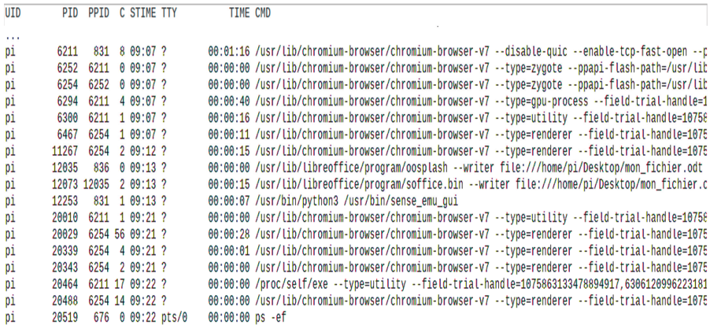

C3 Processus
Activités
 Activité 1 : Observer les processus
Activité 1 : Observer les processus
-
Commande
ps- Consulter l'aide sur la commande
ps, quel est le rôle de cette commande ? - Tester la commande
ps(sans option) dans un terminal. Qu'est-ce quePIDdu processus ? - Tester les options suivantes de la commande
pset indiquer leur rôle (en consultant l'aide de la commande ou en faisant vos propres recherches sur le Web)ps -e(oups -A)ps -fquelle est la signification de la colonnePPID?ps -x
- Consulter l'aide sur la commande
-
Processus et programme
- Lancer un terminal et y taper la commande
pssans aucune option, le résultat devrait être semblable à :On va à présent lancer la calculatricePID TTY TIME CMD 19149 pts/3 00:00:00 bash 19336 pts/3 00:00:00 psgnome-calculatorà partir de ce terminal, pour conserver la main dans le terminal, il faut faire suivre la commande d'un&, il faut donc entrer :gnome-calculator &. - Entrer de nouveau la commande
pspour constater l'apparition d'un nouveau processus, noter sonPID. -
Lancer une nouvelle fois et de la même façon la calculatrice
gnome-calculator. On a donc lancé deux fois le même programme, obtient-on deux fois le même processus ? Que peut-on en conclure sur les notions de programmes et de processus ?Remarque
La commande
pstreepermet de visualiser les processus sous la forme d'une arboresence.
- Lancer un terminal et y taper la commande
-
Tuer un processus
- Recherche la page de documentation de la commande
kill. - A partir du terminal arrêter les processus
gnome-calculatorcrées à la question précédente.
- Recherche la page de documentation de la commande
-
Les commandes
top(ou en version "améliorée"htop), permettent de visualiser un affichage dynamique des processus, contrairement à unpsqui les listent à un instant donné.- Tester ces commandes
- Rechercher la signification de la colonne
S, quelles sont les valeurs possibles ? - Rechercher la signification de la colonne
NI. Comment interpréter les valeurs de cette colonne ?
Activité 2 : Le diner des philosophes
- Consulter la page wikipedia du problème du diner des philosophes pour comprendre le problème.
-
Que se passe-t-il s'il n'y a que deux philosophes et que chacun de ces deux philosophes prend la fourchette située à sa gauche ?
Aide
On rappelle que :
- S'il y a 2 philosophes, alors il y a deux fourchettes.
- Un philosophe a besoin de deux fourchettes pour manger.
-
Par rapport aux vocabulaire des systèmes d'exploitation, que représentent les philosophes ? les fourchettes ?
- Dans le vocabulaire des processus, comment appelle-t-on la situation de la question 2. ?
Cours
Vous pouvez télécharger une copie au format pdf du diaporama de synthèse de cours présenté en classe :
Attention
Ce diaporama ne vous donne que quelques points de repères lors de vos révisions. Il devrait être complété par la relecture attentive de vos propres notes de cours et par une révision approfondie des exercices.
Exercices
Exercice 1 : Commandes Linux
-
Rappeler le rôle des commandes suivantes :
pspstreetop(ouhtop)kill
-
Quelles commandes permettent d'effectuer les actions suivantes :
- Afficher les processus en cours de l'utilisateur toto
- Tuer le processus ayant pour
PID12139
Exercice 2 : Tuer un processus
-
Créer et lancer un programme Python contenant une boucle infinie
Aide
On pourra par exemple créer un programme affichant les entiers 1,2,3,...
-
Arrêter ce programme à partir d'un terminal (repérer d'abord le pid du processus, puis utiliser la commande
kill)
Exercice 3 : Interblocage
Imaginer, puis illustrer par un schéma, une situation d'interblocage faisant intervenir trois processus P1,P2 et P3 et trois ressources R1, R2 et R3.
Exercice 4 : Etats d'un processus
Cet exercice est extrait d'un sujet de bac de la session 2021
- Les états possibles d'un processus sont : prêt, élu, terminé et bloqué.
- Expliquer à quoi correspond l'état élu
- Proposer un schéma illustrant les passages entre les différents états.
Exercice 5 : Processus et interblocage
Cet exercice correspond aux parties A et B d'un sujet de bac de la session 2021
Partie A
Pour chacune des questions, une seule des quatres réponses est exacte.
- Parmi les commandes ci-dessous, laquelle permet d'afficher les processus en cours d'exécution ?
dirpsmanls
- Quelle abréviation désigne l'identifiant d'un processus dans un système d'exploitation de type unix ?
- pix
- sig
- pid
- sid
- Comment s'appelle la gestion du partage du processeur entre différents processus ?
- L'interblocage
- L'ordonnancement
- La planification
- La priorisation
- Quelle commande permet d'interrompre un processus dans un système d'exploitation de type unix ?
- stop
- interrupt
- end
- kill
Partie B
Un processeur choisit à chaque cycle d'exécution le processus qui doit être exécuté. Le tableau ci-dessous donne pour trois processus P1, P2,P3 :
- la durée d'exécution (en nombre de cycles),
- l'instant d'arrivée sur le processeur (exprimé en nombre de cycles à partir de 0)
- le numéro de priorité
Le numéro de priorité est d’autant plus petit que la priorité est grande. On suppose qu’à chaque instant, c’est le processus qui a le plus petit numéro de priorité qui est exécuté, ce qui peut provoquer la suspension d’un autre processus, lequel reprendra lorsqu’il sera le plus prioritaire.
| Processus | Durée d'exécution | Instant d'arrivée | Numéro de priorité |
|---|---|---|---|
| P1 | 3 | 3 | 1 |
| P2 | 3 | 2 | 2 |
| P3 | 4 | 0 | 3 |
-
Reproduire le tableau ci-dessous sur la copie et indiquer dans chacune des cases le processus exécuté à chaque cycle :

-
On suppose maintenant que les trois processus précédents s'exécutent et utilisent une ou plusieurs ressources parmi R1,R2 et R3. Parmi les scénarios suivants, lequel provoque un interblocage ? Justifier.

Exercice 6 : Gestion des processus et des ressources
Cet exercice est extrait d'un sujet de bac de la session 2021
Partie A
Dans un bureau d’architectes, on dispose de certaines ressources qui ne peuvent être utilisées simultanément par plus d’un processus, comme l’imprimante, la table traçante, le modem. Chaque programme, lorsqu’il s’exécute, demande l’allocation des ressources qui lui sont nécessaires. Lorsqu’il a fini de s’exécuter, il libère ses ressources.
 On appelle p1, p2 et p3 les processus associés respectivement aux programmes 1,2 et 3.
On appelle p1, p2 et p3 les processus associés respectivement aux programmes 1,2 et 3.
- Les processus s'exécutent de manière concurrente. Justifier qu'une situation d'interblocage peut se produire.
- Modifier l'ordre des instructions du programme 3 pour qu'une telle situation ne puisse pas se produire. Aucune justification n'est attendue.
- Supposons que le processus p1 demande la table traçante alors qu'elle est en cours d'utilisation par le processus p3. Parmi les états suivants, quel sera l'état du processus p1 tant que la table traçante n'est pas disponible :
a) élu b) bloqué c) prêt d) terminé
Partie B
Avec une ligne de commande dans un terminal sous Linux, on obtient l'affichage suivant :

La documentation Linux donne la signification des différents champs :
- UID : identifiant utilisateur effectif ;
- PID : identifiant de processus ;
- PPID : PID du processus parent ;
- C : partie entière du pourcentage d'utilisation du processeur par rapport au temps de vie des processus ;
- STIME : l'heure de lancement du processus ;
- TTY : terminal de contrôle
- TIME : temps d'exécution
- CMD : nom de la commande du processus
-
Parmi les quatres commandes suivantes, laquelle a permis cet affichage ?
ls -lps -efcd ..chmod 741 processus.txt
-
Quel est l'identifiant du processus parent à l'origine de tous les processus concernant le navigateur Web (chromium-browser) ?
- Quel est l'identifiant du processus dont le temps d'exécution est le plus long ?
Exercice 7 : Processus et base de données
On suppose qu'on dispose d'une base de données des processus lancés sur un ordinateur à un instant donné. Cette base de données est constituée d'une seule table appelée processus et contenant les champs suivants :
pid : Le PID du processus
ppid : Le PPID du processus
user : le nom du propriétaire du processus
priority : la priorité du processus
time : le temps d'execution du processus
cpu : le pourcentage de ressources cpu utilisé par le processus
- Expliquer pourquoi
pidpeut-être utilisé comme clé primaire de cette table et pasuser. - Le champ
ppidpeut-il être utilisé comme clé primaire, pourquoi ? - Proposer un type et un domaine pour le champ
cpu. - Ecrire une requête sql permettant d'afficher les processus de l'utilisateur
root. - Ecrire une requête sql permettant d'afficher les trois processus utilisant le plus de ressources cpu.
- Ecrire une requête sql permettant d'obtenir la somme des temps d'exécution des processus.
- Ecrire une requête sql permettant d'obtenir tous les fils du processus de
pid12415.
Exercice 8 : Exercices extraits de sujet de Bac 2022
-
Amérique du sud (Jour 1) - Exercice 4
Corrigé disponible